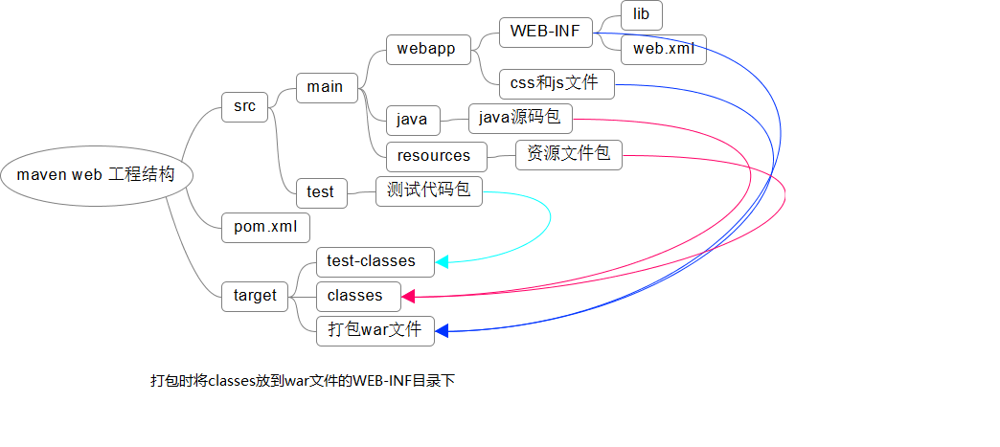

maven
maven 基于项目管理的对象模型(POM),可用一小段描述信息来管理项目的构建、报告和文档的 Java 项目管理工具
安装
- 设置系统环境变量
M2_HOME(maven 安装目录) - 添加
%M2_HOME%/bin到系统变量Path
pom.xml
POM 是项目对象模型(Project Object Model)的简称,它是 Maven 项目中的文件，使用 XML 表示，名称叫做 pom.xml。该文件用于管理：源代码、配置文件、开发者的信息和角色、问题追踪系统、组织信息、项目授权、项目的 url、项目的依赖关系等等。
<project xmlns="http://maven.apache.org/POM/4.0.0" xmlns:xsi="http://www.w3.org/2001/XMLSchema-instance"
xsi:schemaLocation="http://maven.apache.org/POM/4.0.0 http://maven.apache.org/xsd/maven-4.0.0.xsd">
<!-- pom版本 -->
<modelVersion>4.0.0</modelVersion>
<!-- 反写的网址+项目名 -->
<groupId>com.imooc.hi</groupId>
<!-- 项目+模块名 -->
<artifactId>hi</artifactId>
<!-- 大版本号.分支版本号.小版本号 -->
<!-- snapshort 快照
alpha 内测
beta 公测
release 稳定
GA 正式发布
-->
<version>1.0-SNAPSHOT</version>
<!-- 打包方式
默认是jar
war zip pom
-->
<packaging>jar</packaging>
<!-- 父模块 -->
<parent></parent>
<!-- 子模块列表 -->
<modules></modules>
<!-- 项目名 -->
<name>hi</name>
<!-- url -->
<url>http://maven.apache.org</url>
<!-- 项目描述 -->
<description></description>
<developers></developers>
<licenses></licenses>
<organization></organization>
<!-- 定义属性 -->
<!-- 使用${propertyName}的形式引用属性 -->
<properties>
<project.build.sourceEncoding>UTF-8</project.build.sourceEncoding>
</properties>
<!-- 依赖列表 -->
<dependencies>
<dependency>
<groupId></groupId>
<artifactId></artifactId>
<version></version>
<!-- scop表示依赖范围，test表示只在测试范围内有用 -->
<scope>test</scope>
<optional></optional>
<!-- 排除依赖 -->
<exclusions></exclusions>
</dependency>
</dependencies>
<!-- 依赖管理，不引入依赖,而一般用于父模块, -->
<dependencyManagementy>
</dependencyManagementy>
<!-- 构建 -->
<build>
<!-- 插件 -->
<plugins>
</plugins>
</build>
</project>
聚合
创建一个父类 maven 项目，把 pom.xml 文件里的
<package></package>的值改成 pom;通过<modules></modules>引入子项目，可以对多个项目同时进行做处理。
常用命令
- mvn -v
- mvn test
- mvn clean
- mvn compile
- mvn package -Dmaven.test.skip=true -P 环境变量
- mvn install
通过命令行创建项目
mvn archetype:generate
maven 中的坐标和仓库
坐标:
用来标识 maven 构件,包含
groupId、articleId、version标识.
groupId:组织名(网址反写+项目名)
articleId:项目名-模块名
仓库:
用来管理项目依赖，包含本地仓库和远程仓库。
修改本地仓库存放地址
修改${maven 安装目录}\conf\settings.xml
<localRepository>D:/developer/apache-maven-3.3.1/rep</localRepository>
maven 镜像仓库
修改${maven 安装目录}\conf\settings.xml
阿里云:
<mirror>
<id>alimaven</id>
<mirrorOf>central</mirrorOf>
<name>aliyun maven</name>
<url>http://maven.aliyun.com/nexus/content/groups/public/</url>
</mirror>
maven 中如何指定 jdk 的版本
全局配置:指在 ${MAVEN_HOME}\conf\settings.xml 中进行配置，例如，要配置 jdk1.8, 打开 settings.xml 这个文件，然后在 \
\ 之间添加如下代码<profile> <id>jdk1.8</id> <activation> <activeByDefault>true</activeByDefault> <jdk>1.8</jdk> </activation> <properties> <maven.compiler.source>1.8</maven.compiler.source> <maven.compiler.target>1.8</maven.compiler.target> <maven.compiler.compilerVersion>1.8</maven.compiler.compilerVersion> </properties> </profile>全局配置的好处就是省事、方便。一次配置以后，再使用 maven 构建项目，项目编译 时，默认使用 jdk1.8 进行编译。
局部配置就是只针对具体某个项目进行配置的。具体就是，在项目的 pom.xml 文件中 添加如下代码
<build> <plugins> <plugin> <groupId>org.apache.maven.plugins</groupId> <artifactId>maven-compiler-plugin</artifactId> <configuration> <source>1.7</source> <target>1.7</target> </configuration> </plugin> </plugins> <build>
maven webapp 项目结构

配置多环境
打包命令: mvn package -Dmaven.test.skip=true -P环境变量
打包时根据环境的变量引入不同的资源文件
资源文件目录结构示例:
- src/main/resources
共通的资源文件
- src/main/resources.dev
- src/main/resources.beta
- src/main/resources.prod
pom.xml 示例:
<profiles>
<profile>
<id>dev</id>
<properties>
<deploy.type>dev</deploy.type>
</properties>
<activation>
<activeByDefault>true</activeByDefault>
</activation>
</profile>
<profile>
<id>beta</id>
<properties>
<deploy.type>beta</deploy.type>
</properties>
</profile>
<profile>
<id>prod</id>
<properties>
<deploy.type>prod</deploy.type>
</properties>
</profile>
</profiles>
<build>
<plugins>
<plugin>
<groupId>org.apache.maven.plugins</groupId>
<artifactId>maven-compiler-plugin</artifactId>
<version>3.1</version>
<configuration>
<source>1.8</source>
<target>1.8</target>
<encoding>UTF-8</encoding>
<compilerArguments>
<!--打包时引入本地jar-->
<extdirs>${project.basedir}/src/main/webapp/WEB-INF/lib</extdirs>
</compilerArguments>
</configuration>
</plugin>
</plugins>
<resources>
<resource>
<directory>src/main/resources.${deploy.type}</directory>
<excludes>
<exclude>*.jsp</exclude>
</excludes>
</resource>
<resource>
<directory>src/main/resources</directory>
</resource>
</resources>
</build>
maven plugins
// tomcat
<plugin>
<groupId>org.apache.tomcat.maven</groupId>
<artifactId>tomcat7-maven-plugin</artifactId>
<version>2.2</version>
<configuration>
<path>/</path>
<port>8080</port>
<uriEncoding>UTF-8</uriEncoding>
</configuration>
</plugin>